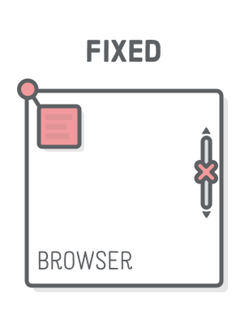

Last updated: 12/09/2021 by sherratt pemberton
CSS Positioning
Author: Sherratt Pemberton Written: 06/12/2021
What are the differences between fixed, relative and absolute positioning in CSS?
How do pictures and other elements keep from coliding with eacher?
If we just threw everything onto the page, without formatting html loads line by line. HTML can handlole this when working with a text document, which can be pretty well formatted within HTML alone.
However, when we introduce pictures, videos and other elements it very quickly become a garbled mess. It makes no difference to computers, but since the whole point of a website is to communicate information to a reader. If elements piled over top and around each other on a whim they would quickly get frustrated and go somewhere else.
fortunately CSS gives us a tool to help solve this dilemma. The positioning property. This property sets how an element in CSS is positioned in a document.
There 5 pre-sets, but we will only look at 3 ways an element can be positioned in a document here.
Relative – the element is positioned relative to its normal position.
this means we can move an element with this pre-set by choosing top, left, right and bottom by a specified number of pixels, and it will change its position in the document according to that pre-set.
Absolute – the element is positioned absolutely to its first positioned parent.
This means we can move an element to a new position and it won’t affect the elements around it.
Fixed – the element is positioned related to the browser window. This means that the document can move around and the element stays in a fixed position on the screen.

For those curious: the final element is the stickey element. The element maintains its relitive position, untill it the browser moves past a pre-set point. When that happens the element maintains a new fixed position while the rest of the document sails past.